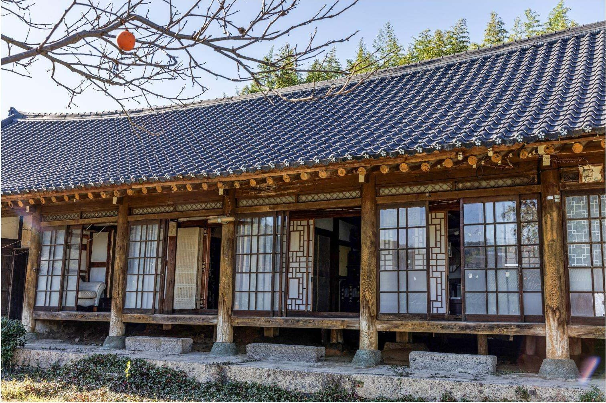

함평 이동범 종가와 백범 김구, 128년의 인연
『백범일지』의 한 대목에서 시작한 가족사 조사 기록 · 전 4편
1898년, 인천감옥을 탈옥한 청년 김구 선생이 전남 함평의 ‘이 진사’ 댁에서 약 보름을 머물렀습니다. 그 집이 저희 고조부 석암 이동범(石庵 李東範, 1869~1940) 선생의 집이라는 이야기는 『백범일지』와 가족의 기억으로 오늘까지 전해져 왔습니다.
이 아카이브는 2026년 백범김구기념관에서 아버지의 인터뷰를 진행해 주신 것을 계기로, 문헌과 가족 소장자료, 후손의 증언을 하나씩 대조하며 정리한 연재 1~4편을 한곳에 모은 것입니다. 기록으로 확인되는 사실과 가족 전승, 그리고 아직 밝혀지지 않은 조사 과제를 구분해 적었습니다.
연재 목차
 제1편
제1편『백범일지』 속 ‘함평 이 진사’는 누구였을까 — 김구와 석암 이동범가, 128년의 인연
『백범일지』에 등장하는 ‘함평 이 진사’와 고조부 석암 이동범(1869~1940), 1898년 청년 김구의 보름 체류, 1917년 『매일신보』 기사, 1947년 「光明」 휘호까지의 첫 정리.
 제2편
제2편김구는 왜 함평의 ‘이 진사’ 집에서 보름을 머물렀을까 — 『백범일지』에 남은 가풍과 은신 이야기
하룻밤이 보름이 된 이유. 『백범일지』에 남은 주인과 손님을 차별하지 않은 가풍, 육모정·토굴·다락방 전승과 1898년 공간·현존 건물을 구분해야 하는 이유.
 제3편
제3편김구는 왜 함평을 나주로 기억했을까 — 1946년의 재회와 「光明」 휘호에 남은 인연
1946년 9월 김구가 옛 은인의 집을 나주로 잘못 기억한 채 찾으려 했고, 이재승·이재혁 형제가 서울로 찾아뵈었다. 1947년 「光明」 휘호의 명문과 날짜를 검토한 편.

제4편이동범·이재승 종가와 이재혁 가옥 — 두 집에 남아 있는 백범 김구와 함평의 역사
장남 이재승 계통의 현존 종가와 차남 이재혁 가옥(2004년 전라남도 문화유산)의 관계를 2003년 조사보고서와 대조. 1898년 체류 공간과 현존 건물의 구분, 함평군 현지조사 요청까지.
한눈에 보는 자료
- 원문 연재(네이버 블로그): 제1편 · 제2편 · 제3편 · 제4편 · 블로그 전체
- 백범김구기념관 공식 인터뷰 영상: https://youtu.be/NZlIOjAmNzg
- 전문·요약을 AI가 읽기 좋은 형태로: llms.txt · llms-full.txt